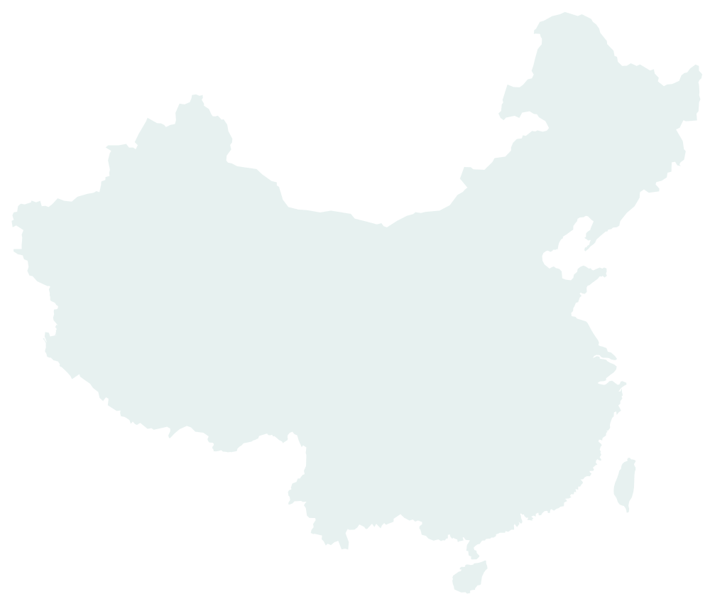

2026
8-9月
南海北部科考航次
8月中旬至9月中旬参加南海北部科考航次，开展海洋观测与CTD采水作业


About
研究方向为水色遥感影像超分辨率，目前在厦门大学攻读硕士学位
掌握Python、PyTorch、Matlab、ENVI、ArcGIS、Google Earth Engine等软件和技能
对AI有浓厚兴趣，熟练运用GhatGPT、CodeX、Claude Code、Cursor等工具辅助研究
热爱台球(多次打出一杆清台)；喜欢玩PUBG(最高14k)、CGGO(残局1V5)
Updates
8月中旬至9月中旬参加南海北部科考航次，开展海洋观测与CTD采水作业
在武汉东湖凌波门完成开放水域游泳，游程约0.97公里

初步搭建个人主页，用于展示学习经历、研究方向和个人兴趣
参与赛事志愿服务，负责现场协调工作

汇报研究成果"基于深度学习方法的GOCI-2遥感影像超分辨率"

Projects & Work
对GOCI-2水体遥感影像构建高质量超分辨数据集，设计专用卷积神经网络架构，融合双态边缘特征提取与坐标注意力机制，模型PSNR较传统基线提升1.8%。
基于GEE平台处理1712景Landsat-8影像，提取2013-2023年月度植被覆盖度数据，构建随机森林模型进行地物分类，精度达96%。
使用GEE云平台批量调用Sentinel-2数据，引入OTSU阈值分割算法，实现2015-2022年海冰高效识别，发表软件著作权《辽东湾海冰监测系统》。
Travel
用脚步丈量世界，每一个标记都是一段故事。将鼠标悬停在城市上查看照片。

北 大 青 西 南 杭 重 长 潮 澳 吉隆坡
吉隆坡
 新加坡
新加坡
Contact
暂时使用占位链接。后续可以替换为邮箱、GitHub、Google Scholar 或其他社交主页。